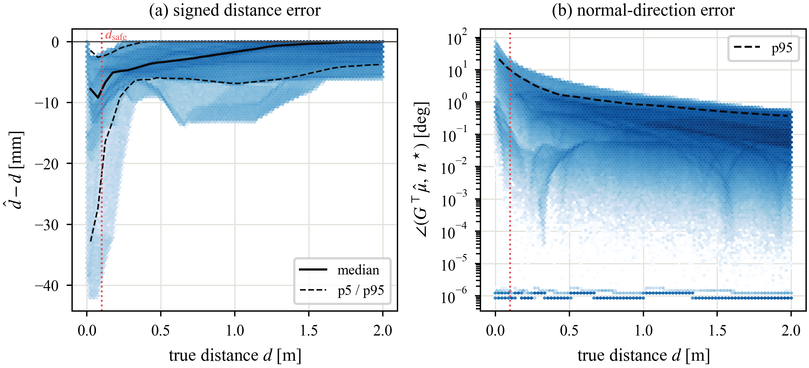
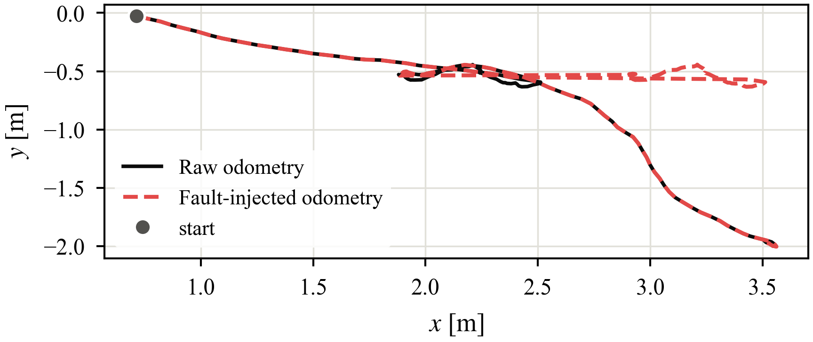
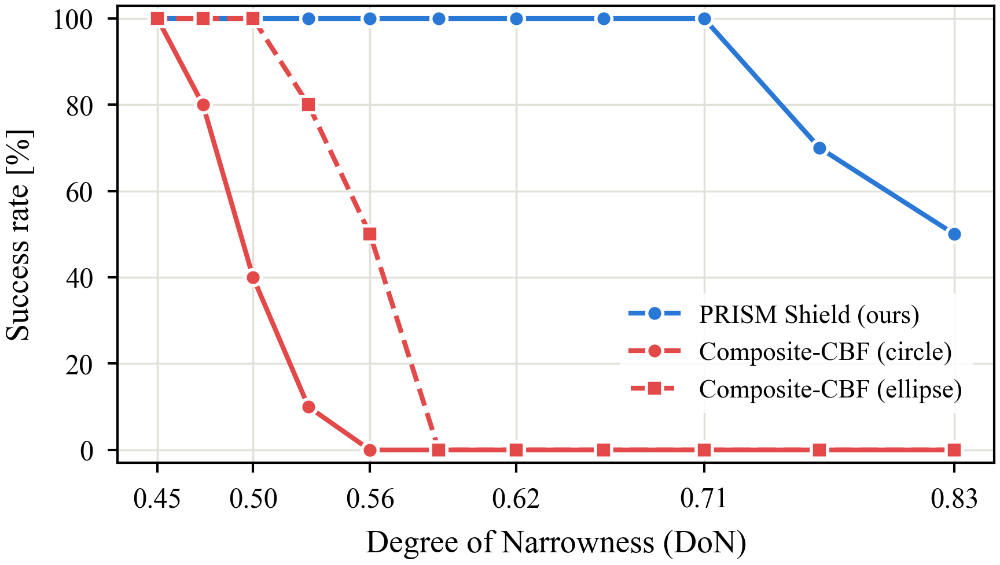
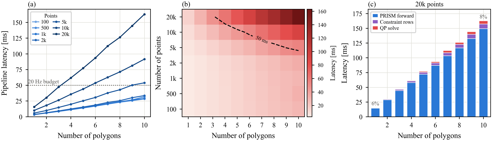
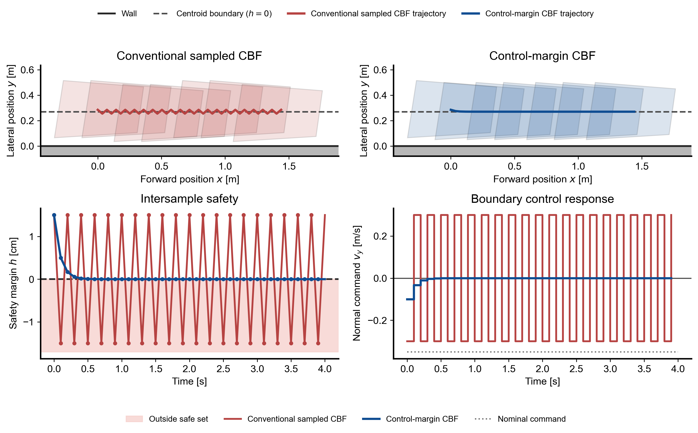
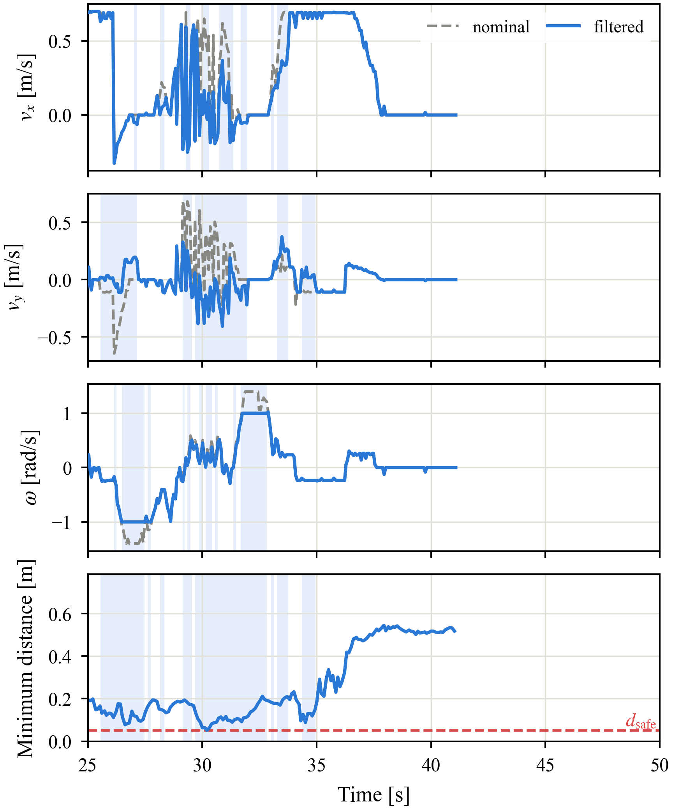

Abstract
Control-barrier safety filters almost always inflate the robot to a disc or an ellipse, because that is the only shape for which the distance to an obstacle has a closed form. The price is paid in the gaps the robot then refuses to enter: a 0.70 × 0.43 m trapezoid inscribed in its circumscribing circle claims 0.82 m of width it does not occupy.
We present PRISM Shield, a safety filter that measures the exact distance from a robot's polygonal footprint to every LiDAR point, directly in the body frame. A small learned network replaces the per-point convex program that this distance would otherwise require, so hundreds of points and a single QP run on-board at control rate. Because the footprint and the point cloud live in the same frame, there is no odometry in the safety loop: a SLAM fault can wreck the nominal planner without touching the safety guarantee.
The learned distance is never optimistic — measured over 3.8 M samples it under-reports the true distance in every range band, so the barrier it induces is conservative by construction. Non-convex robots are handled as a union of convex parts, each contributing its own rows to the same QP without ever differentiating a non-smooth minimum. A control-margin (sampled-data) formulation closes the remaining inter-sample gap that a zero-order-hold CBF-QP leaves open. On a Unitree Go2W with a Livox Mid-360, PRISM Shield clears 0.70 m gaps at a 100% success rate where a circle-inflated composite CBF needs 1.10 m.
(circle baseline: 1.10 m)
over 3.8 M samples
it replaces (1 k points, ECOS)
the safety filter
1. Narrow-gap traversability
A disc-inflated footprint is safe, but it is safe about a robot that does not exist. The Go2W's trapezoid is 0.70 m long and 0.43 m wide at the front; its circumscribing circle is 0.82 m across. Every gap between those two numbers is one the robot could physically pass and the filter refuses.
PRISM-CBF (ours)60 cm gap — passes through
Composite CBF (ellipse)90 cm gap — stalls at the entrance
Composite CBF (circle)100 cm gap — stalls at the entrance
The three runs above are single trials, chosen at each method's own limit: PRISM Shield goes through a gap 1.5× narrower than the one that stops the ellipse baseline and 1.7× narrower than the one that stops the circle.
Over 10 trials per width the picture is the same. PRISM Shield reaches a 100% success rate at 0.70 m; the composite CBF needs 1.00 m with an ellipse and 1.10 m with a circle. The 60 cm run shown here sits below that threshold — at 60 cm our own success rate is 50%, and the baselines are at zero.

[3] M. Harms, M. Jacquet, and K. Alexis, “Safe quadrotor navigation using
composite control barrier functions,” ICRA, 2025.
[5] V. N. Sankaranarayanan et al., “Reactive robot-centric safety for
autonomous navigation in constrained and dynamic environments,”
arXiv:2605.15782, 2026.
Method
Exact distance, learned
The distance from a point to a convex polygon is the value of a small convex program. Solving one per LiDAR point per control tick is far too slow, so PRISM trains a network to emit that value and its gradient direction directly, in the footprint's own frame. Startup refuses to load a checkpoint whose baked-in geometry disagrees with the footprint in the config, so the model and the polygon can never silently drift apart.
Non-convex robots
A robot carrying a board across its back is not convex, and its convex hull would claim the empty wedges on either side. Instead the robot is a union of convex parts:
board (part "bar")
─────────────────────────
███████
███████ body
███████
The union's safety condition is the intersection of the per-part
conditions, so every part contributes its own rows to the same QP and nothing
ever has to differentiate a non-smooth min.
Body frame, no odometry
The footprint polygon and the raw Mid-360 cloud live in the same body frame, so the barrier needs no pose estimate at all. The nominal planner may localize however it likes; when its estimate drifts, the command it produces is wrong but the filter that vets that command is unaffected. Safety degrades gracefully instead of failing with the map.
The learned distance is never optimistic

Signed error d̂ − d (left) and gradient-direction error (right) against true distance, over 3.8 M near-field samples. The error is one-sided: the network under-reports, never over-reports.
| True distance | Samples | MAE | p95 | Optimistic |
|---|---|---|---|---|
| 0 – 0.05 m | 28 k | 10.2 mm | 32.8 mm | 0.00% |
| 0.05 – 0.1 m | 31 k | 10.1 mm | 27.4 mm | 0.00% |
| 0.1 – 0.2 m | 73 k | 7.0 mm | 13.9 mm | 0.00% |
| 0.2 – 0.5 m | 302 k | 3.9 mm | 7.3 mm | 0.00% |
| 0.5 – 1 m | 780 k | 2.7 mm | 6.4 mm | 0.00% |
| 1 – 2 m | 2.6 M | 1.3 mm | 5.3 mm | 0.00% |
A one-sided error is what makes the barrier trustworthy: an under-reported
distance shrinks the safe set, it never inflates it. The residual bias is
absorbed by the d_safe = 0.10 m margin, which is two orders of
magnitude larger than the worst-band MAE.
2. Robustness to odometry failures
We inject a drift fault into the odometry the nominal planner consumes. The estimate diverges from ground truth and the planner's commands go with it — but the barrier is computed from the live cloud in the body frame, so it keeps vetoing the commands that would actually hit something. This is the practical consequence of keeping the pose estimate out of the safety loop, and it is not available to any filter whose obstacle set lives in a world frame.
Without safety filterthe drifted command is executed as issued
PRISM-CBF (ours)same fault, same planner — clearance held

The injected fault in the plane: the planner's belief (red) leaves the true path (black) at t ≈ 26 s and never comes back.
3. Adaptation to different motion constraints
The barrier rows are assembled from the footprint and the cloud; the actuation model enters only as the box the QP optimizes inside. Restricting that box turns the same filter into a different robot without retraining anything:
| Model | Free inputs |
|---|---|
| Hybrid | vx, vy, ω |
| Omnidirectional | vx, vy (ω = 0) |
| Unicycle | vx, ω (vy = 0) |
The nominal command in the run shown is deliberately unsafe: v = 0.5 m/s with ω = 0.8 sin(1.25 t) rad/s, driven straight into the obstacles. Each model finds a different way out of the same scene, and each keeps its clearance.
Hybrid, omnidirectional and unicycle, under the same unsafe command
4. Integration with nominal navigation policies
Dense obstacle course, played at 2×
PRISM Shield is a filter, not a planner: it takes whatever
/cmd_vel arrives and returns the nearest safe command. That
makes the nominal policy a free choice. We drop it under two very different
ones without changing a parameter — Falco [6], a
sampling-based local planner, and NavRL [7], a learned
policy.
Neither was trained or tuned against the filter, and neither needs to know it is there: the filter engages only on the ticks where the nominal command would eat into the margin, and passes it through untouched otherwise.
[6] J. Zhang et al., “Falco: Fast likelihood-based collision avoidance with
extension to human-guided navigation,” Journal of Field Robotics,
37(8):1300–1313, 2020.
[7] Z. Xu et al., “NavRL: Learning safe flight in dynamic environments,”
IEEE Robotics and Automation Letters, 2025.
5. Non-convex footprint with an attached bar
A bar bolted across the robot's back makes the footprint non-convex, and its convex hull would claim the two empty wedges beside the body. Modelled instead as a union of two convex parts, each part contributes its own rows to the same QP. The yaw term of every row uses the body-frame point, so an obstacle beside the bar's tip is far from the body origin and constrains ω hard even while the body itself is clear — that falls out of the kinematics, it is not a hand-added rotation penalty.
Doorwaythe bar clears the frame the body would have ignored
Obstacle fieldboth parts constrain the same QP throughout
Results
Narrow-gap traversal: 100% success at 0.70 m, where the circle baseline needs 1.10 m.

The same result against the dimensionless degree of narrowness (DoN).

Signed distance error compared across footprint models — one-sided everywhere.

Pipeline latency: PRISM inference dominates, the QP itself costs under a millisecond.

Control-margin CBF removes the inter-sample chattering a conventional sampled CBF shows against a wall.

Per-trial overview: nominal versus filtered commands, barrier value h(x), and minimum clearance.
Inside one trial
The same hardware trial as a trace. Top three panels: the nominal command (dashed) against the command PRISM Shield actually issues (blue), with the shaded spans marking the ticks where the filter intervened. Bottom: the minimum distance from the exact trapezoid footprint to the live cloud, held above the 0.10 m margin throughout.
Real-time on board
(a) end-to-end latency against the number of convex parts, (b) the 50 ms (20 Hz) contour over the points × polygons grid, (c) the split between PRISM inference, constraint assembly and the QP solve at 20 k points.
The learned distance replaces a per-point second-order cone program. Against the same problem solved exactly with ECOS:
| Points | Parts | PRISM | ECOS (raw) | Speed-up |
|---|---|---|---|---|
| 100 | 1 | 1.7 ms | 8.3 ms | 5.0× |
| 500 | 1 | 3.1 ms | 40.3 ms | 13.0× |
| 1 000 | 1 | 5.2 ms | 80.4 ms | 15.4× |
| 2 000 | 1 | 9.5 ms | 160.6 ms | 16.9× |
| 5 000 | 1 | 22.6 ms | 399.5 ms | 17.7× |
| 10 000 | 2 | 88.2 ms | 1 611 ms | 18.3× |
Against the same program expressed through CVXPY the gap is roughly 600–700×. The deployed filter runs a 15 Hz control loop on an NVIDIA Jetson Orin NX (ROS 2 Foxy, CUDA), with the QP solve itself under 0.3 ms.
Closing the inter-sample gap
A CBF-QP solved at discrete instants only constrains the barrier at those instants. Between two ticks the robot moves under zero-order hold, and the barrier can dip below zero and come back before the next solve ever sees it. On a footprint hugging a wall this is visible as chattering across h = 0.
The control-margin formulation charges each constraint a margin equal to how far the barrier can move within one hold interval. Bounding that motion by the barrier-relevant rate rather than the full speed matters: the obvious ‖v‖ bound pays for tangential motion that cannot change the barrier at all, and forces a deterministic two-cycle.
Measured over a 4 s wall-following run, with safety checked continuously at 2 ms resolution through every hold interval:
| min. continuous margin | boundary crossed | control TV | sign changes | |
|---|---|---|---|---|
| conventional | −7.6 mm | yes, at t = 0.99 s | 4.79 m/s | 21 |
| control-margin | +0.8 mm | no | 1.81 m/s | 0 |
All 20 random seeds stayed continuously safe. Status: this is validated in simulation; the deployed filter currently enforces the conventional condition.
BibTeX
@article{zhou2026prismshield,
title = {PRISM Shield: Certified Body-Frame Point-Cloud Safety Filtering
for Polygonal Robot Footprints},
author = {Zhou, Wenjie},
journal = {arXiv preprint arXiv:XXXX.XXXXX},
year = {2026},
url = {https://zhouwenjie1124.github.io/Prism-Shield-Website/}
}Acknowledgements
The PRISM training and inference math is adapted from the NeuPAN implementation by Ruihua Han (2025, GPLv3).